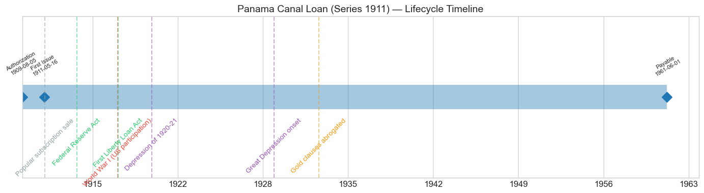
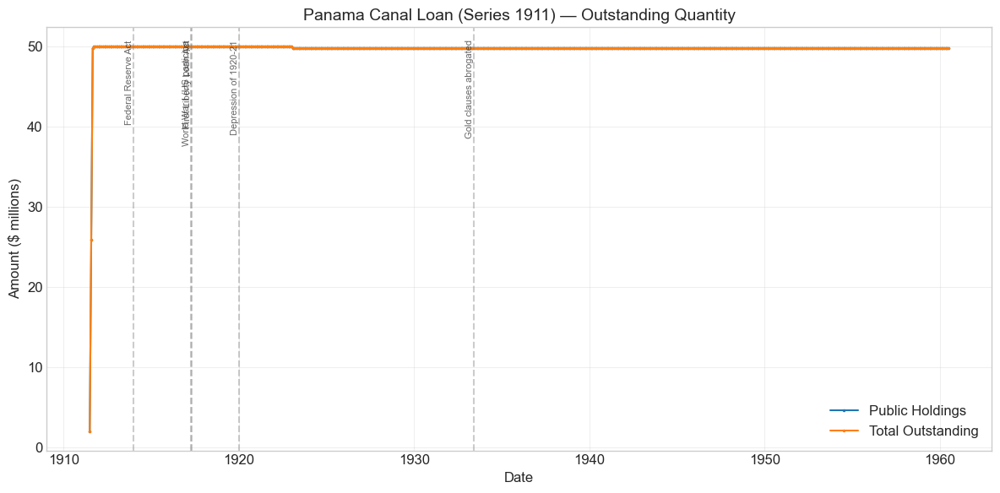
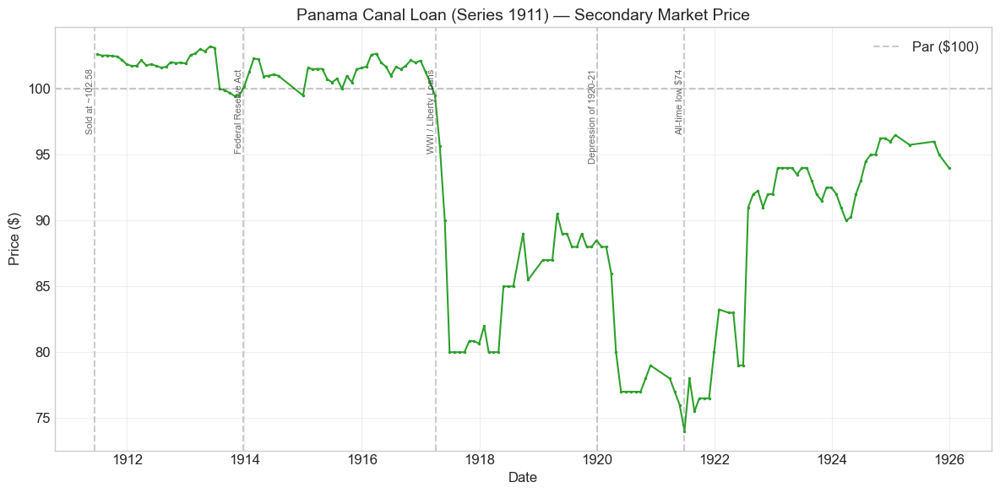
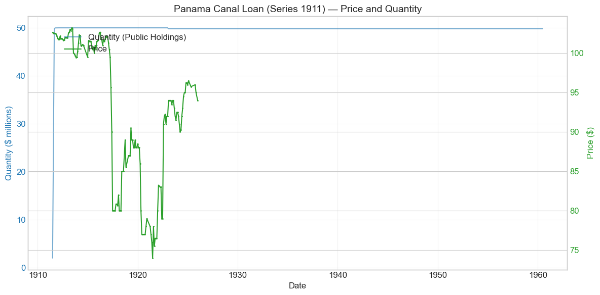
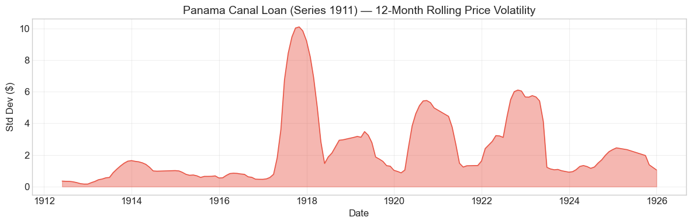

Bond Biography: Panama Canal Loan (Series 1911)#
The First Bond That Had to Earn Its Price#
An enhanced chapter from the Hall-Payne-Sargent US Federal Bond Database (2,857 issues, 1776–1960)
Bond ID (L1): 20134 | Category: Interest Bearing > Marketable > Panama Canal Bond
import pandas as pd
import numpy as np
import matplotlib.pyplot as plt
import matplotlib.patches as mpatches
import datetime
import warnings
warnings.filterwarnings('ignore')
plt.style.use('seaborn-v0_8-whitegrid')
plt.rcParams.update({'figure.figsize': (12, 6), 'font.size': 12,
'axes.titlesize': 14, 'axes.labelsize': 12})
# Load the bond database
store = pd.HDFStore('../data/BondDF.h5', mode='r')
BondList = store['BondList']
BondQuant = store['BondQuant']
BondPrice = store['BondPrice']
store.close()
# Drop one-month prints flagged as data artifacts (each is described in the chapter text)
ARTIFACT_PRINTS = [(20090, '1859-12-31'), (20133, '1919-12-31'), (20170, '1920-01-31'), (20166, '1920-05-31')]
for _id, _d in ARTIFACT_PRINTS:
for _s in ['Average', 'Coupon', 'Registered']:
if (_id, _s) in BondPrice.columns:
BondPrice.loc[pd.Timestamp(_d), (_id, _s)] = float('nan')
BondQuant_T = BondQuant.transpose()
BondPrice_T = BondPrice.transpose()
bond_id = 20134
print(f'Loaded data for: Panama Canal Loan (Series 1911) (ID: 20134)')
/Users/thomassargent/anaconda3/lib/python3.9/site-packages/pandas/core/arrays/masked.py:60: UserWarning: Pandas requires version '1.3.6' or newer of 'bottleneck' (version '1.3.5' currently installed).
from pandas.core import (
Loaded data for: Panama Canal Loan (Series 1911) (ID: 20134)
Overview: The Experiment of 1911#
The Panama Canal Loan (Series 1911) was authorized by the Act of August 5, 1909 and first issued on May 16, 1911, with a coupon rate of 3.0%. During its life on the secondary market as recorded in this database, the bond’s average price was $92.91, ranging from $74.00 to $103.22 (157 monthly observations from June 1911 to December 1925). Outstanding quantity reached its $50 million peak by November 1911 and remained essentially unchanged through the end of the database in June 1960, with the bonds payable June 1, 1961.
Behind those bland statistics lies one of the most instructive experiments in this database. The third Panama Canal issue was, deliberately, everything its two predecessors were not. The Panama 2s of 1906 and 1908 — like the great 2 percent Consols of 1930 before them — carried the circulation privilege: national banks could deposit them with the Treasurer as security for their circulating notes, and that franchise, not the government’s credit, set their price. A 2 percent bond stood at par because a bank could turn it into currency. Two statutes broke with that machinery. Section 39 of the Act of August 5, 1909 authorized $290,569,000 of additional canal bonds at a coupon of up to 3 percent and repealed the Spooner Act’s 2 percent authority. As written, the 1909 Act left the new bonds eligible as note collateral, a point Secretary MacVeagh’s 1910 annual report raised with Congress. The Act of March 2, 1911 closed it: it authorized the Secretary to insert in the bonds a provision that they “shall not be receivable by the Treasurer of the United States as security for the issue of circulating notes to national banks.” When Secretary of the Treasury Franklin MacVeagh brought $50 million of fifty-year 3s to market in June 1911 by popular subscription, the United States was doing something it had scarcely attempted since the Civil War era — asking the open market what a long federal bond was worth on its investment merits alone, with no regulatory subsidy attached.
The market’s answer was emphatic. Bids totaled $212,085,200 for the $50 million offered, and the bonds were awarded at an average price of $102.5825 per $100 of face value (the database’s recorded price sold), a yield to the 1961 maturity of 2.9019 percent by the Treasury’s reckoning (Annual Report of the Secretary of the Treasury, 1911, p. 5) — at the time the cheapest unsubsidized long-term money any government in the world could raise. That figure, unlike the sub-2-percent quoted “yields” on the propped 2s, was a genuine market interest rate. The price history that follows is therefore uniquely valuable: for the years before the Liberty Loans, the Panama 3s of 1911 are among the cleanest reads in this database of the true long-term borrowing cost of the United States — and after 1917 they record, without cushioning, what war finance and postwar deflation did to every 3 percent promise. The companion chapter on the Consols of 1930 (Bond ID 20131) tells the story of the administered world this bond deliberately left behind; the two chapters are best read together.
Historical Context#
The following major events framed this bond’s lifetime:
Date |
Event |
Category |
|---|---|---|
1909-08-05 |
Authorizing act (§39): canal bonds at up to 3% |
Legislation |
1911-03-02 |
Act authorizing exclusion of the §39 bonds from note collateral |
Legislation |
1911-06 |
Popular subscription sale; $50 million awarded at 102.5825 |
Fiscal |
1913-12-23 |
Federal Reserve Act |
Legislation |
1917-04-06 to 1918-11-11 |
World War I (US participation) |
War |
1917-04-24 |
First Liberty Loan Act |
Legislation |
1920-01-01 to 1921-07-01 |
Depression of 1920–21; long-term rates peak |
Crisis |
1929-10-29 to 1933-03-01 |
Great Depression onset |
Crisis |
1933-06-05 |
Joint Resolution abrogating gold clauses |
Legislation |
1961-06-01 |
Bonds payable (beyond the database window) |
Fiscal |
Why Congress dropped the circulation privilege#
By 1909 the bond-secured national bank note had few defenders left. The premium that the 2 percent Consols and the first two Panama series commanded was understood, by Treasury officials and financial writers alike, to be a hidden subsidy from note-issue economics: banks bid a 2 percent bond to par and above because the deposited bond generated circulating notes that could be lent at market rates. The arrangement made the Treasury’s borrowing look artificially cheap while hard-wiring the nation’s currency supply to the stock of eligible federal debt — an inelasticity the Panic of 1907 had just exposed brutally. Adding $50 million more of privilege-bearing 2s would have meant $50 million more of bond-secured currency at the very moment Congress, through the Aldrich–Vreeland Act of 1908 and the National Monetary Commission, was groping toward an elastic currency on entirely different principles. The 1909 act raised the coupon ceiling to 3 percent; the 1911 act cut the cord: the new canal bonds would have to sell on their merits, and the money supply would be no larger for it. What the government gave up in coupon it gained in honesty — for the first time in decades, a Treasury bond price would mean what it appeared to mean.
World War I: a 3 percent promise meets 4¼ percent money#
American entry into the war in April 1917 remade the government bond market overnight. The Liberty Loan Acts authorized borrowing on a scale that dwarfed the entire pre-war debt, at coupons of 3½ and then 4 and 4¼ percent. A fifty-year 3 percent bond with no privilege attached had nothing to shield it: as the First Liberty Loan came to market, the Panama 3s fell from about $101 in January 1917 to $90 in May and $80 by June 1917, and they sat at or near 80 through the spring of 1918 — a price implying a long-term yield of roughly 3.9 percent, in line with the new Liberty coupons after allowing for the Panama bonds’ broader tax exemption. Over 1917–18 the circulation-privilege Panama 2s never traded below the mid-90s, while the unpropped 3s lost a fifth of their value. The note-collateral franchise accounts for part of that contrast. Maturity and call terms account for the rest: the 3s were a non-callable fifty-year bond, while the 2s were already redeemable at the Treasury’s option and so traded more like short paper.
The Depression of 1920–21: the bottom of the market#
The postwar inflation and the Federal Reserve’s belated, severe tightening drove long-term interest rates to their highest levels in a generation. The Panama 3s slid from the high 80s in 1919 to 77 by mid-1920 and touched their all-time low of $74.00 in June 1921 — a rough yield to maturity above 4 percent, the most the market ever demanded of this bond. The same squeeze carried the 4¼ percent Fourth Liberty Loan below 85. When the deflation broke and rates collapsed in late 1921 and 1922, the 3s recovered with the whole long market, regaining the low 90s by 1923 and the mid-90s by the end of 1925, where the database’s price series for this issue ends.
The Great Depression and after#
The database’s quantity series shows the loan sitting essentially untouched — $49.8 million outstanding — through the Great Depression, the 1933 abrogation of gold clauses (which reached this bond’s gold-coin promise as it did every other), and the entire low-interest-rate era that followed, all the way to the end of the database in June 1960. Regular price quotations for the issue end in this database in December 1925, so the later chapters of its market life are not recorded here; what the data do establish is that the fifty-year experiment ran its full course, with the bonds payable June 1, 1961.
# Bond Lifecycle Timeline
fig, ax = plt.subplots(figsize=(14, 4))
# Key dates
dates = [('Authorization', '1909-08-05'), ('First Issue', '1911-05-16'), ('Payable', '1961-06-01')]
events = [('Popular subscription sale', '1911-06-01', 'other'), ('Federal Reserve Act', '1913-12-23', 'legislation'), ('World War I (US participation)', '1917-04-06', 'war'), ('First Liberty Loan Act', '1917-04-24', 'legislation'), ('Depression of 1920-21', '1920-01-01', 'crisis'), ('Great Depression onset', '1929-10-29', 'crisis'), ('Gold clauses abrogated', '1933-06-05', 'monetary')]
import matplotlib.dates as mdates
from datetime import datetime
# Plot bond lifetime bar
d0 = datetime.strptime(dates[0][1], '%Y-%m-%d')
d1 = datetime.strptime(dates[-1][1], '%Y-%m-%d')
ax.barh(0, (d1 - d0).days, left=mdates.date2num(d0), height=0.3,
color='#1f77b4', alpha=0.4, label='Bond Lifetime')
# Mark key dates
for label, date_str in dates:
d = datetime.strptime(date_str, '%Y-%m-%d')
ax.plot(mdates.date2num(d), 0, 'D', color='#1f77b4', markersize=10)
ax.annotate(f'{label}\n{date_str}', (mdates.date2num(d), 0.25),
ha='center', va='bottom', fontsize=8, rotation=30)
# Mark historical events
colors = {'war': '#e74c3c', 'crisis': '#9b59b6', 'legislation': '#2ecc71', 'other': '#95a5a6', 'monetary': '#f39c12'}
for name, date_str, cat in events:
d = datetime.strptime(date_str, '%Y-%m-%d')
ax.axvline(mdates.date2num(d), color=colors.get(cat, 'gray'), alpha=0.5, linestyle='--')
ax.annotate(name, (mdates.date2num(d), -0.25), ha='center', va='top',
fontsize=10, rotation=45, color=colors.get(cat, 'gray'))
ax.set_yticks([])
ax.xaxis.set_major_formatter(mdates.DateFormatter('%Y'))
ax.set_title('Panama Canal Loan (Series 1911) — Lifecycle Timeline')
ax.set_ylim(-1, 1)
plt.tight_layout()
plt.show()

Bond Features#
Feature |
Detail |
|---|---|
Name |
Panama Canal Loan (Series 1911) |
Authorizing Act |
August 5, 1909 |
First Issue Date |
May 16, 1911 |
Term |
50 years; payable June 1, 1961 |
Coupon Rate |
3.0% |
Payment Frequency |
Quarterly (4 times/year) |
Payable In |
Gold coin (clause later abrogated by the Joint Resolution of June 5, 1933) |
Callable |
No |
Circulation Privilege |
None — excluded under the Act of March 2, 1911; not eligible as security for national bank notes |
Amount Issued |
$50 million |
Price Sold |
~$102.58 per $100 (database: 1.025825), by popular subscription |
Tax Status |
Exempt from all federal taxes and from state and local taxation (Act of August 5, 1909, §39) |
# Display full bond features from database
row = BondList.loc[20134]
display_cols = [
"Treasury's Name Of Issue", 'Authorizing Act', 'Term Of Loan',
'First Issue Date', 'First Redemption Date', 'Final Redemption Date',
'Coupon Rate', 'Coupons Per Year', 'Callable', 'Coin',
'Authorized Amount', 'Price Sold'
]
print('Bond Features from Database:')
print('=' * 55)
for col in display_cols:
if col in row.index:
print(f' {col:<30} {row[col]}')
Bond Features from Database:
=======================================================
Treasury's Name Of Issue Panama Canal Loan (Series 1911)
Authorizing Act August 5, 1909
Term Of Loan 50 years
First Issue Date 1911-05-16 00:00:00
First Redemption Date NaT
Final Redemption Date NaT
Coupon Rate 3.0
Coupons Per Year 4.0
Callable 0.0
Coin 1.0
Authorized Amount nan
Price Sold 1.025825
Bond Quantity Over Time#
The bond’s outstanding quantity peaked at $50.00 million in November 1911. The quantity data span June 1911 to June 1960 (589 monthly observations) — the full length of the database window, because the fifty-year bonds were still outstanding when the database closes, a year short of their June 1961 payable date.
# Bond quantity over time
fig, ax = plt.subplots(figsize=(12, 6))
for stype in ['Public Holdings', 'Total Outstanding']:
try:
s = BondQuant_T.loc[(20134, stype)]
s = s[s.notna()]
if len(s) > 0:
ax.plot(s.index, s.values / 1e6, marker='.', markersize=3, linewidth=1.5, label=stype)
except KeyError:
pass
ax.set_title('Panama Canal Loan (Series 1911) — Outstanding Quantity')
ax.set_xlabel('Date')
ax.set_ylabel('Amount ($ millions)')
ax.legend()
ax.grid(True, alpha=0.3)
events = {'1913-12-23': 'Federal Reserve Act', '1917-04-06': 'World War I (US participa', '1917-04-24': 'First Liberty Loan Act', '1920-01-01': 'Depression of 1920-21', '1933-06-05': 'Gold clauses abrogated'}
for date_str, label in events.items():
d = pd.Timestamp(date_str)
ax.axvline(d, color='gray', alpha=0.4, linestyle='--')
ax.text(d, ax.get_ylim()[1]*0.97, label, rotation=90, va='top', ha='right', fontsize=8, alpha=0.7)
plt.tight_layout()
plt.show()

Quantity Analysis: One Sale, Then Half a Century of Stillness#
The quantity series could hardly be simpler, and its simplicity is itself informative. The loan came into existence in a single popular-subscription operation in the summer of 1911: about $2 million was on the books at the end of June, $25.9 million by the end of July, $49.8 million by the end of August, and the full $50 million by November as subscription installments were completed. There were no later tranches, no conversions in, no exchange windows — a clean cash sale, in sharp contrast to the Consols of 1930, which grew by a staircase of conversions over seven years.
After that, almost nothing. The only movement the series ever records is a reduction of $0.2 million in January 1923, leaving $49.8 million outstanding — a trivial retirement, plausibly a purchase for government account, though the database does not record the mechanism and we do not press the point. From 1923 the line is perfectly flat for thirty-seven years, through the 1920s boom, the Depression, the Second World War, and the postwar era, until the database closes in June 1960. Being non-callable, the bonds could not be refinanced away in the cheap-money 1930s and 1940s as callable issues were; the Treasury simply had to let the fifty years run. A 3 percent coupon that looked expensive to service in 1921 looked like a bargain by 1945 — one of the quieter illustrations in this database of what a long non-callable maturity does: it locks in the issuer’s terms for good and ill, and here mostly for good.
Secondary Market Prices#
Overall Statistics (1911-06-30 to 1925-12-31): Mean $92.91, Range $74.00–$103.22, Std Dev $8.99, 157 observations.
By Period:
Period |
Mean |
Std |
Min |
Max |
Obs |
|---|---|---|---|---|---|
Issue to end of quotations (1911-06 to 1925-12) |
$92.91 |
$8.99 |
$74.00 |
$103.22 |
157 |
Set these numbers beside the Consols of 1930 and the difference between an administered price and a market price is laid bare. The consols — a 2 percent bond — averaged $102.52 with a standard deviation of $3.31 over a quarter century. The Panama 3s — a higher-coupon bond of the same obligor — averaged $92.91 with nearly three times the volatility. The 2s were quiet because regulation, not the market, made their price; the 3s moved because nothing stood between them and the long-term interest rate. The path has three acts: a premium plateau at $101–103 from 1911 to early 1917, when the 3s were the benchmark long bond of a low-rate gold-standard world; a violent repricing to $80 in the spring of 1917, when the Liberty Loans reset the government’s own cost of money above 4 percent; and a long saucer through the 1920–21 deflation low of $74 back to the mid-90s by 1925. Read as yields, the same path runs from a little under 2.9 percent at issue to above 4 percent at the 1921 trough and back to roughly 3.3 percent — the cleanest continuous record in this database of the true U.S. long-term rate across the war.
# Annotated price chart
fig, ax = plt.subplots(figsize=(12, 6))
s = BondPrice_T.loc[(20134, 'Average')]
s = pd.to_numeric(s, errors='coerce').dropna()
if len(s) > 0:
ax.plot(s.index, s.values, marker='.', markersize=3, linewidth=1.5, color='#2ca02c')
ax.axhline(100, color='black', alpha=0.2, linestyle='--', label='Par ($100)')
ax.set_title('Panama Canal Loan (Series 1911) — Secondary Market Price')
ax.set_xlabel('Date')
ax.set_ylabel('Price ($)')
ax.legend()
ax.grid(True, alpha=0.3)
events = {'1911-06-15': 'Sold at ~102.58', '1913-12-23': 'Federal Reserve Act', '1917-04-06': 'WWI / Liberty Loans', '1920-01-01': 'Depression of 1920-21', '1921-06-30': 'All-time low $74'}
for date_str, label in events.items():
d = pd.Timestamp(date_str)
ax.axvline(d, color='gray', alpha=0.4, linestyle='--')
ax.text(d, ax.get_ylim()[1]*0.97, label, rotation=90, va='top', ha='right', fontsize=8, alpha=0.7)
plt.tight_layout()
plt.show()

# Price and Quantity — dual-axis chart
fig, ax1 = plt.subplots(figsize=(12, 6))
# Quantity (left axis)
for stype in ['Public Holdings', 'Total Outstanding']:
try:
q = BondQuant_T.loc[(20134, stype)]
q = q[q.notna()]
if len(q) > 0:
ax1.plot(q.index, q.values / 1e6, color='#1f77b4', alpha=0.6, label=f'Quantity ({stype})')
break
except KeyError:
pass
ax1.set_xlabel('Date')
ax1.set_ylabel('Quantity ($ millions)', color='#1f77b4')
ax1.tick_params(axis='y', labelcolor='#1f77b4')
# Price (right axis)
ax2 = ax1.twinx()
p = BondPrice_T.loc[(20134, 'Average')]
p = pd.to_numeric(p, errors='coerce').dropna()
if len(p) > 0:
ax2.plot(p.index, p.values, color='#2ca02c', marker='.', markersize=2, label='Price')
ax2.set_ylabel('Price ($)', color='#2ca02c')
ax2.tick_params(axis='y', labelcolor='#2ca02c')
ax1.set_title('Panama Canal Loan (Series 1911) — Price and Quantity')
ax1.grid(True, alpha=0.3)
fig.legend(loc='upper left', bbox_to_anchor=(0.1, 0.9))
plt.tight_layout()
plt.show()

Detected Price/Quantity Events, Explained#
The following significant movements were auto-detected in the data, with causal analysis:
Date |
Type |
Change |
Explanation |
|---|---|---|---|
1911-07 |
Quantity increase |
+1172.3% |
Subscription installments arriving. The June 1911 popular sale was paid in over the summer; the enormous percentage reflects the small end-of-June base ($2.0M), not a second offering. |
1911-08 |
Quantity increase |
+92.1% |
The remainder of the $50 million sale settling — $49.8M was on the books by the end of August. |
1917-05 |
Price drop |
−5.9% |
The First Liberty Loan Act (April 24) put 3½ percent bonds before the public in unprecedented volume. A pre-war 3 percent bond, priced at par-plus in a sub-3-percent world, had to reprice to the government’s new cost of money. |
1917-06 |
Price drop |
−11.1% |
The repricing completes: from $90 to $80 in a month as the First Liberty Loan closed. The 3s then held at a flat 80 through September 1917 and again from February to April 1918, prints that may be stale. The propped Panama 2s, meanwhile, never fell below the mid-90s; the privilege and the 2s’ shorter effective maturity both contributed. |
1918-05 |
Price spike |
+6.2% |
A recovery from 80 to 85 as the market found its level between the Third Liberty Loan (April 1918) and improving war news. In an issue this small and this closely held, moves of a few points can also reflect thin quotation. |
1920-04 |
Price drop |
−7.0% |
The 1920 rate peak. The Federal Reserve’s sharp tightening from late 1919 drove all long bonds down; the 3s fell from 86 to 80 and drifted to the all-time low of $74 in June 1921. |
1921-07 |
Price spike |
+5.4% |
The turn. Deflation broke, the Fed eased, and long rates began the great decline of 1921–22; the 3s never saw the 70s again after 1921. |
1922-07 |
Price spike (partly stale print) |
+15.2% |
Partly real, partly artifact. The 1922 rally in long-term governments was genuine and substantial, but a 12-point jump in one month (79 to 91) almost certainly also reflects stale or thin quotations in the preceding months — the May–June 1922 prints of 79 sit oddly below the 83–83¼ quotes of the winter. We attribute the step’s size to quotation infrequency in a small, tightly held issue rather than to any single event. |
Price Volatility#
Maximum drawdown: −28.3% (from the peak of $103.22 on May 31, 1913 to the trough of $74.00 on June 30, 1921)
Average monthly return: −0.032%
These are the numbers of a bond exposed to the weather. The Consols of 1930, over a comparable period, managed a maximum drawdown of only −14.2%, and took over a decade to accomplish it; the unprotected Panama 3s lost twice as much, with most of the damage concentrated in the two months of mid-1917. The rolling-volatility chart below shows the pattern plainly: near-total calm from 1911 through 1916, when the 3s traded like the gilt-edged benchmark they were; a spike in 1917–18 as the Liberty Loans repriced the government’s credit; and a second, broader swell through the 1920–21 deflation and the 1922 recovery. Note that the drawdown here, unlike the wartime collapse of the Louisiana Sixes of 1803, involved no doubt whatever about payment — every quarterly coupon was paid in full throughout. This is pure interest-rate risk, borne over a fifty-year horizon: the price a genuinely market-priced long bond pays when the level of interest rates moves against it.
# Rolling volatility (12-month window)
p = BondPrice_T.loc[(20134, 'Average')]
p = pd.to_numeric(p, errors='coerce').dropna()
if len(p) >= 12:
rolling_std = p.rolling(window=12).std().dropna()
fig, ax = plt.subplots(figsize=(12, 4))
ax.fill_between(rolling_std.index, rolling_std.values, alpha=0.4, color='#e74c3c')
ax.plot(rolling_std.index, rolling_std.values, color='#e74c3c', linewidth=1)
ax.set_title('Panama Canal Loan (Series 1911) — 12-Month Rolling Price Volatility')
ax.set_xlabel('Date')
ax.set_ylabel('Std Dev ($)')
ax.grid(True, alpha=0.3)
plt.tight_layout()
plt.show()
else:
print('Insufficient data for rolling volatility (need >= 12 observations)')

Issuance, Distribution, and Redemption#
The sale of June 1911. Secretary MacVeagh offered the $50 million by popular subscription — sealed bids invited from the general public rather than a negotiated placement with a banking syndicate — continuing the Treasury’s practice, established with the Spanish-War loan of 1898, of selling its bonds directly to citizens and institutions. The offering attracted bids well beyond the amount available and was awarded at an average price of about $102.58 (the database’s price-sold figure), a premium that made headlines: a fifty-year 3 percent bond, stripped of every artificial support, commanding more than par. Contemporary comment rightly treated the result as a certificate of the standing of American credit — no other test so clean had been available since before the circulation-privilege era began. The bonds were issued in both coupon and registered form in the customary denominations, and because they were useless as note collateral, their buyers were genuine investors — savings banks, insurance companies, trustees, and individuals — rather than note-issuing national banks. That difference in ownership is why the 3s, unlike the vault-bound 2s, kept an active quoted market.
A life without events. Nothing in the loan’s administration required drama. The quarterly gold coupons were paid without interruption; the single $0.2 million reduction of January 1923 is the only change the quantity series ever shows; and the bonds, being non-callable, could not be swept up in any refunding. The gold-coin clause was abrogated, along with every other, by the Joint Resolution of June 5, 1933, after which the coupons were payable in legal tender — by then an academic distinction for a bond trading well below its old gold-parity value in the 1920s and, in the cheap-money 1930s, a matter the market had already absorbed across the whole government list.
Redemption beyond the horizon. The database ends in June 1960 with $49.8 million still outstanding and the bonds due June 1, 1961. Their retirement at maturity lies just past the edge of our data, and we leave it there: within the database window, the Panama 3s of 1911 are that rare thing, a fifty-year contract carried from beginning to nearly its end without a single missed payment, a single call, or a single alteration of terms — save the one alteration, in 1933, that the sovereign imposed on all its creditors at once.
Implications and Legacy#
The end of the administered price. The 1911 sale marks a hinge in the history this database records. From the National Banking Acts of the 1860s to the Panama 2s of 1908, the price of long-term federal debt had been entangled with the bond-secured currency: banks were made to want the bonds, and the quoted yields — 2 percent and below — flattered the Treasury while measuring mostly the value of a note-issuing license. The 3s of 1911 were the first major long issue in half a century sold with no such entanglement, and the market’s verdict — a shade under 2.9 percent for fifty-year money — is the first clean observation of the modern era’s central fiscal quantity: the price of unsubsidized long-term U.S. credit. Payne, Szőke, Hall & Sargent (2025) lean on exactly this distinction in estimating the government’s true cost of borrowing under the gold standard, and this bond is one of the few pre-1917 anchors available.
A preview of the Liberty Loan world. The method mattered as much as the price. A large loan sold at a premium by popular subscription to genuine investors, priced on merits, widely distributed — this was, in miniature, the template the Liberty Loans would scale up a thousandfold in 1917–18. It is one of the ironies of this bond’s biography that the regime it pioneered promptly devastated it: the Liberty coupons of 3½–4¼ percent reset the market it had been the benchmark of, and the 3s spent the rest of the decade twenty points underwater. The first bond priced honestly by the market was also the first to demonstrate, on a government issue, what honest pricing costs when the world changes.
Interest-rate risk, exhibited. For readers of this database the 3s of 1911 are the cleanest early specimen of a risk that dominates modern bond markets but is nearly invisible in the propped issues of the same era: duration. A fifty-year non-callable bond is a long lever, and the swing from $103 to $74 and back toward par — with the credit of the obligor never once in question — is that lever working. Set beside the Consols of 1930, whose price regulation held nearly still through the same storms, the pair make a two-panel illustration no textbook could improve upon: what a bond price means when regulation makes it, and what it means when the market does.
The quiet vindication. The experiment of 1909–1911 was not repeated on the old terms because it did not need to be: the Federal Reserve Act of 1913 abolished the rationale for bond-secured currency, the circulation-privilege 2s were retired in 1935, and every federal bond since has been, in the sense this chapter has used, a Panama 3 — priced by the market on its merits. The fifty-year bonds themselves aged into obscurity, a $49.8 million line item carried unchanged on the Treasury’s books into the 1960s. But the principle they tested in June 1911 — that the United States could borrow long, cheaply, and honestly, with no subsidy but its own credit — became the foundation of the largest government securities market in the world.
References#
Primary Sources#
Act of August 5, 1909 (Payne–Aldrich Tariff Act), §39, authorizing $290,569,000 of additional Panama Canal bonds at up to 3 percent interest, tax-exempt, and repealing the 2 percent authority.
Act of March 2, 1911, authorizing the Secretary to make the §39 bonds unreceivable as security for national bank note circulation.
Spooner Act of June 28, 1902 (the original Panama Canal bond authorization) and the Act of December 21, 1905, under which the Series 1906 and 1908 2 percent bonds were issued.
Joint Resolution of June 5, 1933 (abrogation of gold clauses).
Annual Reports of the Secretary of the Treasury, 1909–1912 (Secretary Franklin MacVeagh: the 1910 report, pp. 3–4, on the privilege the 1909 Act left attached; the 1911 report, p. 5, on the June 1911 sale) and subsequent years.
Annual Reports of the Comptroller of the Currency (bonds eligible and ineligible as security for circulation).
Scholarly Works#
Friedman, M. & Schwartz, A. J. (1963). A Monetary History of the United States, 1867–1960. Princeton: Princeton University Press.
Noyes, A. D. (1909). Forty Years of American Finance. New York: G. P. Putnam’s Sons.
Timberlake, R. H. (1993). Monetary Policy in the United States: An Intellectual and Institutional History. Chicago: University of Chicago Press. (On the bond-secured currency and the movement away from it.)
Homer, S. & Sylla, R. (2005). A History of Interest Rates, 4th ed. Hoboken: Wiley. (On the anomalously low quoted yields of circulation-privilege bonds and the market yields of the 1911 3s.)
Garbade, K. D. (2012). Birth of a Market: The U.S. Treasury Securities Market from the Great War to the Great Depression. Cambridge: MIT Press.
Payne, J., Szoke, B., Hall, G. & Sargent, T. (2025). “Costs of Financing US Federal Debt Under a Gold Standard: 1791–1933.” Quarterly Journal of Economics.
General Histories#
Dewey, D. R. (1918). Financial History of the United States. New York: Longmans, Green and Co.
Studenski, P. & Krooss, H. E. (1952). Financial History of the United States. New York: McGraw-Hill.
Bayley, R. A. (1881). The National Loans of the United States, From July 4, 1776 to June 30, 1880. Washington: Government Printing Office.
See also, in this database, the companion chapter on the Consols of 1930 (Bond ID 20131) — the fullest account of the circulation-privilege regime that the Series 1911 bonds were designed to escape — and the chapters on the Panama Canal Loans of Series 1906 and Series 1908, the propped siblings against which this bond’s market price should be read.
Enhanced Bond Biography generated from the Hall-Payne-Sargent Bond Database. Narrative enrichment draws principally on the Act of August 5, 1909, the Annual Reports of the Secretary of the Treasury, Dewey (1918), Timberlake (1993), Friedman & Schwartz (1963), Homer & Sylla (2005), and Garbade (2012).